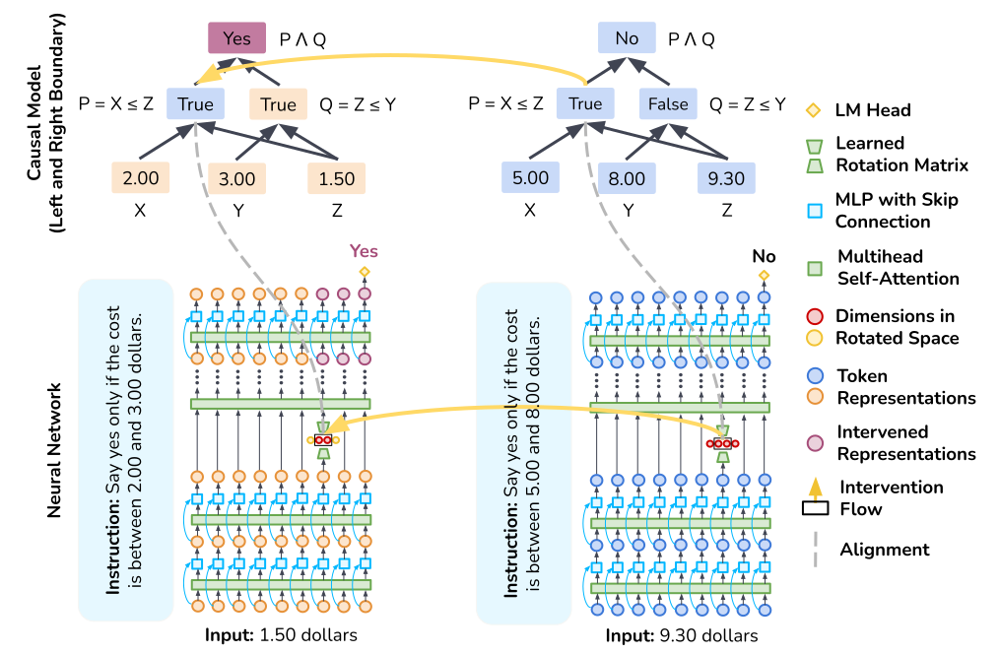

Interpretability at Scale:
Identifying Causal Mechanisms in Alpaca

ArXiv
Preprint

Source Code
Github

Alpaca
Model

本文
中文翻译
How to Identity Causal Mechansims in LLMs?
Interpretbility tools poorly scale with LLMs as they often focus on a small model that is finetuned for a specific task. In this paper, we propose a new method based on the theory of causal abstraction to find representations that play a given causal role in LLMs. With our tool, we discover that the Alpaca model implements a causal model with interpretable intermediate variables when solving a simple numerical reasoning task. Furthermore, we find that these causal mechanisms are robust to changes in inputs and instructions. Our causal mechanism discovery framework is generic and ready for LLMs with billions of parameters.
In this figure, the Alpaca model is instructed to solve our Price Tagging Game,
"Say yes if the cost (Z) is betwee 2.00 (X) and 3.00 (Y) dollars, otherwise no."
On the top, we have a causal model that solves this problem by having two boolean variables determine whether the input amount is above the lower bound and below the upper bound. Here, we try to align the first boolean varibale. To train for an alignment, we sample two training examples and then swap the intermediate boolean value between them to produce a counterfactual output using our causal model. In parallel, we swap activations between these two examples with the neurons proposed to align. Lastly, we train our rotation matrix such that our neural network behaves counterfactually the same as the causal model.
Why We Scale Causal Mechanism Discovery?
Obtaining robust, human-interpretable explanations of large, general-purpose language models is an urgent goal for AI. Current tools have major limitations:
- Search Space Is Too Large. LLMs has billions of parameters and sequence representations grow as length grows. The search space of neurons are often too large to any heuristic-based search tools.
- Representations Are Distributed. The mappings between activations of individual neurons in LLMs to concepts are often many-to-many, not one-to-one. Past works claiming a set of neurons representing a simple concept (e.g., gender) may be specious while neurons can encode something far more complex (e.g., superposition of multiple concepts).
- Zero Robuestness. Alignments or circuits found in previous works often assume a finetuned model trained specifically for the task, and even with a fixed length input with a fixed template. We are not sure whether these alignments generalize or not, and if generalize to what extent.
Distributed Alignment as an Optimization Problem
Instead of iteratively search for alignments over neurons, we adapt our recently proposed Distributed Alignment Search (DAS) [2] by turing alignment process into an optimation problem. In DAS, we find the alignment between high-level and low-level models using gradient descent rather than conducting a brute-force search, and we allow individual neurons to play multiple distinct roles by analyzing representations in non-standard bases-distributed representations.

This figure (copied from the original paper) illustrates one example of a distributed interchange intervention when training DAS. It shows a zoomed in version of the rotation matrix training process in our first figure. Essentially, we call forward passes for all inputs, and we apply a learnable rotation matrix on the representation we are aligning. Then, we do interventions on the rotated space with an objective of aligning counterfactual behaviors predicted by our high-level causal model.
In this work, we propose an updated version of DAS, Boundless DAS, by scaling these methods significantly by replacing the remaining brute-force search steps with learned parameters. Here are some key advantages:
- Turning Search into an Optimization Problem. With intervention in the rotated space, we now only need to check whether we could learn a faithful rotation matrix (see next section for our unified metrics of faithfulness) in order to evaluate a proposed alignment.
- Subspace Alignment. Our rotation matrix is an orthogonal matrix and it is othornormal. Each dimension after rotation is a linear combination of original dimensions. In the orthogonalized representation, each dimension is thus independent which is useful for our assumption that intermediate variables are independent.
Generic Boundless DAS Pseudocode
Boundless DAS is a generic method for any model. Here we show a pseudocode snippet for generic decoder-only LLMs.
Ideally, this could also be extend to encoder-decoder LLMs, or encoder-only LLMs.
Our Unified Metrics
We use Interchange Intervention Accuracy (IIA) proposed in previous causal abstract works [3] [4] to evaluate how well or faithful our alignment in the rotated subspace is. The higher the IIA is, the better the alignment is. Here is one running example with a very simple arithmetic task (a + b) * c,

In this problem, if we have these four neurons perfectly align with an intermediate variable representing (a + b), then one can determinstically take activations from these four neurons from an input (1 + 2) * 3, and plug them into another input (2 + 3) * 4 and get the model to output (1 + 2) * 4 = 12. We call this case, a perfect alignment with 100% IIA. We use the same metrics to evaluate alignments in the rotated subspace.
Note that the meaning behind IIA changes slightly for Boundless DAS: for an 100% IIA in the rotated subspace, it means the aligning causal variable is distributed in the original representation 100%. We can also reverse engineer the learned rotation matrix to back out the weight for each original dimension.
A Simple Numeric Reasoning Task
To start with, we construct a simple numeric reasoning task that the Alpaca model can solve fairly easily.


Our central research question is: Is the Alpaca model following any of these causal model when solving the task? We try to answer this question by finding alignments for intermediate causal variables above colored in red.
Our Findings: Which Alignments Are More Faithful?
We train Boundless DAS on token representations across multiple layers and positions for our task. And we evaluate our learned alignments on hold out testing set to get testing time IIA distributions. Here are the alignment results for all four high-level causal models we are considering,

Our Findings: Are Found Alignments Robust?
One central criticism of mechanistic interpretability is results may only work with a specific setup of seen input-output pairs. In this section, we try to tackle this concern by asking whether the causal role (i.e., alignments) found using Boundless DAS in one setting is preserved in another setting with different levels of difficulties. This is crucial as it tells how robustly the causal model is realized in the neural network. We investigate three settings,- New Brackets. We train alignments on a set of brackets and see if they generalize to new brackets.
- Irrelevant Context. We inject random context as prefix at testing time for evaluating alignments.
- Sibling Instruction. We train alignments for instructions saying "Say yes ..., otherwise no" and see if they generalize to instructions saying "Say True ..., otherwise False".

Bigger Picture
Automated causal mechanism discovery (i.e., circuits discover or mechanistic interpretability) is not an easy task of which there are a lot of moving parts. In the paper, we offer a step forward towards this goal by coming up with a improved paradigm using our proposing method,

Limitations
Our work marks a first step forward toward understanding the internal causal mechanism of LLMs. It has limitations and it potentially opens up a line of work in this direction.- Go Bigger. we hope our framework can be applied to study the most powerful LLMs (e.g., GPT-3 with 175B or GPT-4) when they are released since current work still focuses on a simple reasoning task that smaller LLMs can solve.
- Deterministic Causal Model. Our work relies on the high-level causal models known as a priori which is unrealistic in many real-world applications where the high-level causal models are hidden as well. Future works can investigate ways to learn high-level causal graphs through discrete search based on heuristics or even end-to-end optimized with
- Ultimate Scalability. The scalability of our method is still bounded by the hidden dimension size of the search space. It is now impossible to search over a group of token representations in LLMs as the rotation matrix grows exponentially as the hidden dimension grows.
- No Conclusive Answer. Our evaluation paradigm could rank between proposing alignments based on IIA (i.e., greybox) but could not make conclusive inferences about failed alignments.
How to Cite
This work is in preprint only. It can be cited as follows.
bibliography
Zhengxuan Wu, Atticus Geiger, Christopher Potts, and Noah Goodman. "Interpretability at Scale: Identifying Causal Mechanisms in Alpaca." Ms. Stanford University (2023).
bibtex
@article{wu-etal-2023-Boundless-DAS,
title={Interpretability at Scale: Identifying Causal Mechanisms in Alpaca},
author={Wu, Zhengxuan and Geiger, Atticus and Potts, Christopher and Goodman, Noah},
year={2023},
eprint={2305.08809},
archivePrefix={arXiv},
primaryClass={cs.LG}
}